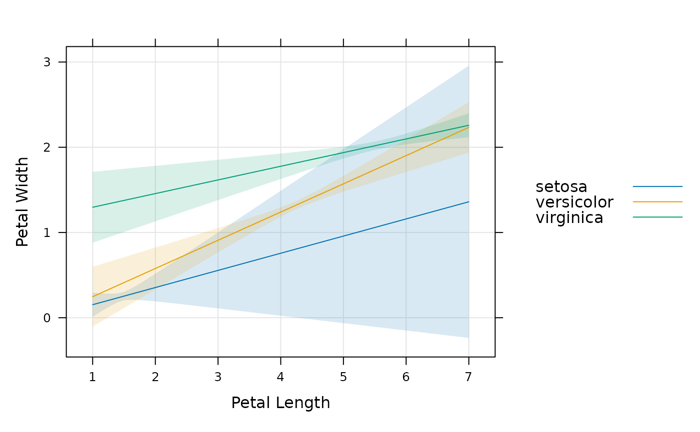

Panel function for confidence interval
Usage
panel.ci(
x,
y,
lower,
upper,
groups = NULL,
subscripts,
col,
fill = if (is.null(groups)) plot.line$col else superpose.line$col,
alpha = 0.15,
lty = 0,
lwd = if (is.null(groups)) plot.line$lwd else superpose.line$lwd,
grid = FALSE,
...,
col.line = if (is.null(groups)) plot.line$col else superpose.line$col
)Arguments
- x, y
variables to be plotted in the scatterplot
- lower
lower confidence limits
- upper
upper confidence limits
- groups
an optional grouping variable. If present,
panel.superposewill be used instead to display each subgroup- subscripts
- col
line color
- fill
fill color
- alpha
opacity for the fill
- lty
line type
- lwd
line width
- grid
A logical flag, character string, or list specifying whether and how a background grid should be drawn. This provides the same functionality as
type="g", but is the preferred alternative as the effecttype="g"is conceptually different from that of othertypevalues (which are all data-dependent). Using thegridargument also allows more flexibility.Most generally,
gridcan be a list of arguments to be supplied topanel.grid, which is called with those arguments. Three shortcuts are available:TRUE:roughly equivalent to
list(h = -1, v = -1)"h":roughly equivalent to
list(h = -1, v = 0)"v":roughly equivalent to
list(h = 0, v = -1)
No grid is drawn if
grid = FALSE.- ...
Extra arguments, if any, for
panel.xyplot. Usually passed on as graphical parameters to low level plotting functions, or to the panel functions performing smoothing, if applicable.- col.line
line color. Supersedes
colif both are specified.
Examples
mod <- lm(Petal.Width ~ Petal.Length * Species, data = iris)
newdat <- expand.grid(
Petal.Length = seq(1, 7, by = 0.1),
Species = c("setosa", "versicolor", "virginica")
)
pred <- predict(mod, newdat, interval = "confidence")
dd <- cbind(newdat, pred)
xyplot(
fit ~ Petal.Length,
groups = Species, data = dd,
prepanel = prepanel.ci, auto.key = list(lines = TRUE, points = FALSE),
ylab = "Petal Width",
xlab = "Petal Length",
lower = dd$lwr, upper = dd$upr, type = "l",
panel = function(...) {
panel.ci(..., alpha = 0.15, grid = TRUE)
panel.xyplot(...)
}
)
